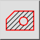
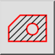
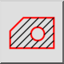
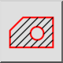

Hatch from Selection
Toolbar / Icon:
 

Menu: Рисовать > Штриховка > Hatch from Selection
Shortcut: H, A
Commands: hatch | ha
Это автоматический перевод.
Toolbar / Icon:
 

Menu: Рисовать > Штриховка > Hatch from Selection
Shortcut: H, A
Commands: hatch | ha
Description:
This tool fills an area surrounded by existing entities with a hatch pattern or a solid color.
Procedure: